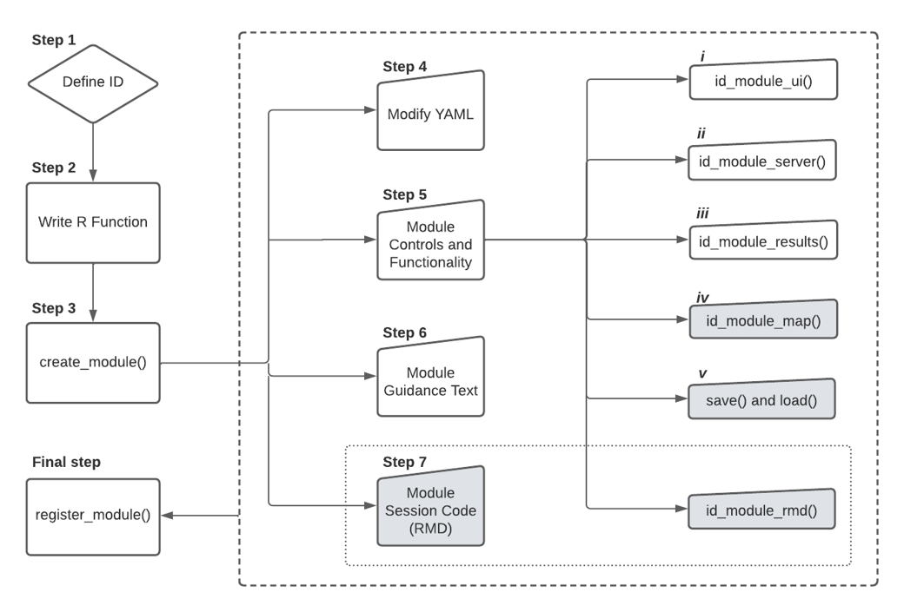

How to write a module in Wallace
Gonzalo Pinilla-Buitrago, Jamie M. Kass, Siew Fong Chen, Peter Galante, Bethany A. Johnson, Dean Attali
April 19, 2022
module-addition.RmdWallace is an R-based, interactive application
for reproducible ecological modeling, currently focusing on species
distribution modeling. The application is composed of sequential steps
of analysis called “components”, and methodological options within each
component called “modules”. A key feature is that the application is
expandible via the addition of new modules. This vignette guides users
through the module authorship process, explaining the steps involved in
adding a module, best practices to follow, and occasional
troubleshooting. This vignette primarily targets researchers who want to
author their own Wallace module that performs some additional
analysis either for their own use or for others to use within the
Wallace workflow. To follow along, it will help to have at
least an intermediate understanding of R programming. Also,
please see our
publication
in Methods in Ecology and Evolution to read in detail about our
philosophy for Wallace, the modularity of the application, and
our vision for module authorship.
Wallace was built using an R package for developing graphic
user interface applications called shiny, and the modules
in Wallace are structured as shiny modules. Before
proceeding, it is advisable to read through the
tutorial
on shiny to give you a firm foundation of the basics. This
instructional
page on shiny modules is also very helpful. For further
reading, there are many more shiny informational resources
here
as well.
Wallace package structure
First, we will give a brief overview of the file structure of the
wallace package. The starred directories and files are the
ones we will be concentrating on in this vignette. Particular focus will
be on the two main scripts ui.R and server.R.
The ui.R file controls the layout and appearance of the
application, while the server.R file contains the
instructions needed to build the application. Also of note is the script
that includes helper functions, and the directories for modules
(/inst/shiny/modules), module functions (/R),
and component guidance text (/inst/shiny/Rmd).
/wallace
---DESCRIPTION # Package description
---NAMESPACE # File with functions names
---NEWS.md # Release news of each version
---README.md # Information about package
---wallace.Rproj # R project file -- when developing, load wallace with this
+---/inst
+---/extdata # Folder with example data
+---/module_skeleton # Folder to create template of module (do not modify)
+---/shiny # Folder with files of the graphic interface
---global.R # File for module loading (do not modify)
---helpers.R # Helper functions not specific to any one module
---server.R # Script with all functionality for processing
---ui.R # Script with all functionality for user interface
+---/custom_modules # Folder that host files of new module
---penvs_correlation.md # Guidance text file
---penvs_correlation.R # File with core module functionality
---penvs_correlation.Rmd # File with code to add to the session code (optional)
---penvs_correlation.yml # YML file for calling the module internally
+---/modules # Folder with files of modules already integrated in the interface
+---/Rmd # Folder with component guidance text and files to create session code
+---/www # Folder with images and css to include in the interface
+---/man # Folder with function documentations
+---/R # Folder with package R functions. Your R function should be saved here
---custom_modules.R # Function to create module template
---helper_functions.R # Collection of function for internal Wallace functionality.
---run_wallace.R # Funtion to open interface
---wallace-package.R # Information about package
---penvs_correlation.R # Function that will create in this vignette
--- … # More R function for each module
+---/tests # Unit test scripts and data
+---/vignettes # RMD files for vignettesWallace data structure
Before moving forward, we should go over some important points about
the structure of the data that Wallace stores. All data
specific to the species is recorded in a reactive list called
spp. In shiny, reactive objects are dynamic
entities that update whenever the user makes a change using the
shiny interface (i.e., pushes a button, selects a value).
Thus, spp will update depending on what species is
currently selected by the user. Since Wallace can now handle analyses of
multiple species, the reactive function curSp() simply
returns the name of the species currently selected in Wallace,
and so spp[[curSp()]] will index spp to return
data on the selected species. And since spp updates are
based on user input, it is necessary to use a reactive function to
retrieve the species name. By running spp[[curSp()]], we
can see a list of data objects for the selected species, including the
occurrence data, environmental variables, and more.
Printed example for one species using spp[[curSp()]]:
. Chrysocyon_brachyurus = list 12
. . occs = list 34 ( data.frame )
. . . ... and 22 more
. . occData = list 2
. . rmm = list 8( list RMM )
. . rmd = list 0
. . envs = character 1= wcbc
. . polySelXY = double 10= named array 5 X 2= -78.369 -76.26 -36.012 ...
. . polySelID = integer 1= 2067
. . procOccs = list 2
. . procEnvs = list 2
. . bg = list 32( data.frame )
. . . ... and 20 more
. . bgPts = list 2( data.frame )
. . evalOut = S4 1( ENMevaluation )Below is the complete list of reactive functions like
curSp() used internally in Wallace as shortcuts
that return characters (i.e., text) based on user selections.
| shortcut | output |
|---|---|
| curSp() | selected species name |
| curMsp() | selected species names separated by “|” |
| allSp() | vector of all species names |
| spIn() | if batch on, all species names, if batch off, selected species name |
| curEnv() | selected environmental variable |
| curModel() | selected model |
| component() | selected component |
| module() | selected module |
In addition, some data objects that are used often in the analysis
have special shortcut reactive functions associated with them. For
example, the occurrence data table spp[[curSp()]]$occs can
be accessed with the shortcut function occs().
NOTE: These functions cannot be used to overwrite
entities in the list—in this case, you must use the explicit,
non-reactive reference.
For example:
# this will not work to overwrite
occs() <- newDF
# this will work
spp[[curSp()]]$occs <- newDFBelow is the complete list of reactive functions used internally in Wallace as shortcuts to return data objects based on user selections.
| description | shortcut | long_form | class |
|---|---|---|---|
| occurrence locality coordinates | occs() | spp[[curSp()]]$occs | data frame |
| environmental raster(s) | envs() | spp[[curSp()]]$envs | Raster |
| background locality coordinates | bg() | spp[[curSp()]]$bg | matrix |
| background extent polygon | bgExt() | spp[[curSp()]]$procEnvs$bgExt | SpatialPolygons |
| environmental raster(s) masked to background extent | bgMask() | spp[[curSp()]]$procEnvs$bgMask | Raster |
| ENMeval results table | evalOut() | spp[[curSp()]]$results | data frame |
| model prediction raster | mapPred() | spp[[curSp()]]$visualization$mapPred | Raster |
| model transfer raster | mapXfer() | spp[[curSp()]]$transfer$mapXfer | Raster |
| metadata | rmm() | spp[[curSp()]]$rmm | rangeModelMetadata |
Module addition
There are seven necessary steps to adding a module:
- Define an ID for the new module.
- Write an R function.
- Create a
shinymodule template usingwallace::create_module(), which creates the four files .yml, .R, .md, and .RMD (the asterisk will be replaced by the module ID given when creating the template) - Modify the *.yml file to define internal parameters in Wallace. For example; the titles, authors, package used, and more importantly, the component in where your new module will be placed.
- Add source code to the *.R file to display your module’s controls
and implement its functionality.
- Fill the *.Rmd with guidance text for your module.
- Optional: Add session code to be incorporate in markdown to reproduce analysis in an R environment.
- Tell the Wallace app to use your new module.

The example module we will describe calculates pairwise Pearson’s correlation coefficients for all environmental data, and will be added to the existing Process Environmental Data (penvs) component.
Step 1: Define ID
First, we must define an ID for the new module. This ID must be unique (there cannot be two modules with the same ID) and can only contain English letters, digits, and underscores.
New module IDs should begin with the short name for its component (e.g., “vis” for “Visualize”; see table below), followed by an underscore and a unique module short name.
| Component | Short Name |
|---|---|
| Obtain Occurrence Data | occs |
| Obtain Environmental Data | envs |
| Process Occurrence Data | poccs |
| Process Environmental Data | penvs |
| Characterize Environmental Space | espace |
| Partition Occurrence Data | part |
| Build and Evaluate Niche Model | model |
| Visualize Model Results | vis |
| Transfer Model | xfer |
| Reproduce | rep |
Examples of existing module names are occs_queryDb for the Obtain Occurrence Data component and the Query Database module, and poccs_thinOccs for the Process Occurrence Data component and the Spatial Thin module. The complete list can be found in the folder /wallace/inst/shiny/modules.
We will name this module “penvs_correlations”.
Step 2: Write an R function
Let’s write a function that carries out the module’s analysis. For
this simple example, we will print a matrix of pairwise Pearson’s
correlation coefficients for all environmental data. To calculate
Pearson correlations among rasters, we will call the
layerStats() function from the raster
package (Hijmans & van Etten, 2012). This function takes the
following inputs: 1) RasterStack of environmental data and 2) a
statistic to compute (here we will use Pearson’s correlation
coefficient). We will then write a module function to call the
layerStats() function within the Wallace
session.
This function has arguments for the 1) environmental rasterStack
masked by the background extent (bgMask), 2) the name of the species
(spN), and 3) logger, a reactive value object that holds all the text
and HTML formatting for the log window. Reactive variables such as
logger can only be used within reactive contexts – they will not work
for regular R functions. When this function is run internally, the
argument “logger” should be set to the reactive value object
logger, which will get updated with the messages produced
by our module function. This sends messages entered with
writeLog() to the Wallace log window. The function
smartProgress() will generate a shiny progress bar in the
lower-right corner of the interface that tracks the progress of the
layerStats() function. If the module function is run
outside of a Wallace session, the argument “logger” should be
left at the default NULL, which will make writeLog() and
smartProgress() print messages and progress bars to the R
console, respectively. Additionally, hlSpp() is a function that will
highlight the printed text in bold green. This function should be used
as the first parameter for writeLog() to highlight the printed species
name (e.g., “Canis lupus | …Your message here…”).
Open a new R Script and write the module function as written below.
This is a basic R function with some Wallace functionality that
gets saved into the /R directory with the other package
functions. Do not forget to document your function following basic
roxygen
structure with @export at the end, as we will need to
include reference to this function in the NAMESPACE. Save the code below
as wallace/R/penvs_correlations.R.
#' @title penvs_correlations
#' @description Runs Pearson correlations between variable pairs
#' @param bgMask Environmental rasters for study region.
#' @param spN Species' name for log window.
#' @param logger Reactive values list of log window text.
#’ @details Any additional details needed.
#' @return A data frame
#' @author Juan Perez
#' @export
penvs_correlations <- function (bgMask, spN = NULL, logger = NULL) {
smartProgress(logger,
message = "Calculating pairwise Pearson's correlations", {
envCorrs <- layerStats(bgMask,
stat = "pearson",
na.rm = TRUE)
})
logger %>% writeLog(hlSpp(spN), "Pearson complete")
return(envCorrs)
}In the case that your function becomes too long or has many nested
functions, you can write auxiliary (helper) functions in the same file
(see wallace/R/envs_ecoClimate.R for an example).
Once your module function is finished, we will add it to the package
NAMESPACE by running devtools::document() or by pressing
Ctrl/Cmd + Shift + D in Rstudio. Finally, load the function
using devtools::load_all().
Step 3: Create a shiny module with create_module()
We have just specified the functionality for the module, an .R script
that goes in the /R folder, and now we will specify the
module’s structure in several files that go in the
/inst/shiny/custom_modules folder. Wallace modules
depend on several files: *.yml, *.md,
*.R, and optionally *.Rmd. To generate
templates for these files, run wallace::create_module() ,
then fill the arguments in as follows:
- id (string): It is the module name. You will use “penvs_correlations” here.
- dir (string): Folder path in which your module will be saved. You will use “./inst/shiny/custom_modules”
- result (boolean): TRUE for this example. TRUE if the module should support showing information in the Result tab. See more in Step 5, option iii.
- map (boolean): FALSE for this example. TRUE if the module should support modifying the map. See more in Step 5, option iv.
- save (boolean): FALSE for this example. TRUE if the module saves custom data when the user saves the current session. See more in Step 5, option v.
- rmd (boolean): FALSE for this example. TRUE if the module should add Rmd code to the Session Code. See more in Step 7.
wallace::create_module(id = "penvs_correlations",
dir = "./inst/shiny/custom_modules",
map = FALSE,
result = TRUE,
rmd = FALSE,
save = FALSE)Four new files will be created in the ./custom_modules
directory: penvs_correlations.yml, penvs_correlations.md,
penvs_correlations.R, and optionally penvs_correlations.Rmd.
Step 4: Modify YAML to internal module calling
Open the YAML file penvs_correlations.yml and set the
following parameters:
- component: Which component this module belongs to (one of: occs, envs, poccs, penvs, espace, part, model, vis, xfer)
- short_name: The label to show beside the radio button in the component’s UI
- long_name: A longer name for the module, to show as the title in the UI
- authors: The author(s) of this module
- package: The R package that is used by this module (if more than one, use a comma between them)
component: "penvs"
short_name: "Pearson's correlations"
long_name: "Calculate pairwise Pearson's correlations between environmental layers"
authors: "Peter Galante"
package: [raster]Step 5: Module controls and functionality
Aside from the .R file in /R directory, you also need to
have an .R file named penvs_correlations.R that specifies
the controls and how the module function is run in the same directory as
the YAML file. This R file contains 3 main parts and 3 optional
ones:
- A function named
penvs_correlations_module_uireturns the user interface (UI) for this module, which includes the controls that the user interacts with to input module parameters and run functions. This function should follow the conventions for general Shiny modules—it should take a single argument called “id”, use it to create a unique namespace for the module, and return a list of UI objects. Usually, there should at least be a button that runs the module function. Shiny modules operate in their own unique namespaces, and so use of theNS()function is necessary to ensure the module’s UI controls can talk toui.R. The functionns()(for namespace), returned fromNS(id), is run on the ID names of shiny UI input elements, as innumericInput(ns("degFr"), ...), to enable this connection toui.R. See the shiny module vignette for more details.
penvs_correlations_module_ui <- function(id) {
ns <- shiny::NS(id)
tagList(
# UI
## Add a checkbox for batch processing (more than 1 species)
checkboxInput(ns("batch"), label = strong("Batch"), value = TRUE),
## Give the action button a name and a label.
actionButton(ns("runCorrs"), label = "Calculate correlations"),
## UI for reselecting variables after calculating correlations. This custom input one will create in the server module function
uiOutput(ns("VarSelect")),
## UI button to select variables to be used in the analysis.
actionButton(ns("selectConfirm"), label = "Select Variables")
)
}- A function named
penvs_correlations_module_serverthat defines the server functionality for this module. This function should follow the conventions for general Shiny modules— it should take argumentsinput,output, andsession, as well as one extra argumentcommon.
The common variable supplied to a module’s server
function (and map function, explained later) is a list containing: The
following reactive variables that can be used by the module: logger,
spp, curSp, allSp, curEnv, curModel, component, module, envs.global,
mapCntr. The following reactives that are shortcuts to reactives inside
spp: occs, envs, bg, bgExt, bgMask, evalOut, mapPred, mapXfer, rmm. A
function update_component(tab) that allows you to switch to
a new tab within the component.
This function penvs_correlations_module_server() is a
wrapper for a shiny reactive expression. Inside, there is a template for
the essential parts needed in a Wallace module. First, we
specify shorter names for the shortcut variables inside the “common”
list. Next, we specify a UI function that can use reactive values inside
of this server function—in this case, we want to know the names of the
environmental variables input so they can be printed to the UI control
(see Creating a reactive shortcut in the next section for more details).
After this, we specify when the module function gets run. The function
observeEvent() performs an action in response to an event
(e.g., clicking a button created by
penvs_correlations_module_ui()). Inside of each
observeEvent(), you need to include the following code. The
first, “WARNING”, catches any possible errors before the module’s core
functionality is run. If there is an error, the function stops and a log
error message is written. The user will need to define these errors in
order to catch them and prevent the module from crashing unexpectedly.
Next, under “FUNCTION CALL”, we call the function from
/wallace/R and make sure it returns what we expect. Next,
under “LOAD INTO SPP”, we load the model object into spp.
Finally, under “METADATA”, we fill in appropriate metadata fields for
the rangeModelMetadata object in spp. Ultimately, the
module author decides what metadata to include, but we encourage authors
to explore the rangeModelMetadata object, decide which fields best apply
to your module, and enter information detailed enough to enable
reproducibility. As shiny modules exist in their own namespaces, if we
want to refer to any of the results from the module later (in other
modules), we need to put them into the spp reactiveValues
list.
penvs_correlations_module_server <- function(input, output, session, common) {
## Define common objects that will be used in this function
logger <- common$logger
spp <- common$spp
allSp <- common$allSp
curSp <- common$curSp
bgMask <- common$bgMask # raster stack after masking by background
VarSelector <- common$VarSelector # See how to create and include a reactive shortcut later in the main text.
# Create a custom UI input
output$VarSelect <- renderUI({
req(bgMask())
shinyWidgets::pickerInput(
"VarSelector",
label = "Select variables",
choices = setNames(as.list(names(bgMask())), names(bgMask())),
multiple = TRUE,
selected = names(bgMask()),
options = list(`actions-box` = TRUE))
})
## When action button defined in the ui function above is clicked, do the following:
observeEvent(input$runCorrs, {
# WARNING ####
if (is.null(bgMask())) {
logger %>% writeLog(type = 'error', hlSpp(curSp()), 'Background data missing. Sample study region first')
return()
}
# Check that the background has already been selected
req(bgMask())
# Set up if you want batch to be allowed
# allSp() is the list of species selected
# curSp() refers to the currently selected species in the GUI
if (input$batch == TRUE) spLoop <- allSp() else spLoop <- curSp()
# If batch is true, loop through all species (allSp())
for (sp in spLoop){
# FUNCTION CALL ####
smartProgress(logger, message = "Calculating pairwise correlations", {
envCorrs <- raster::layerStats(x = spp[[sp]]$procEnvs$bgMask, na.rm = T, stat = "pearson")})
# To update the log window
logger %>% writeLog(hlSpp(sp), "Finished calculating correlations")
#envCorrs <- raster::layerStats(x = bgMask(), na.rm = T, stat = "pearson")
# LOAD INTO SPP ####
spp[[sp]]$procEnvs$envCorrs <- envCorrs$`pearson correlation coefficient`
# METADATA ####
}
# Switch to Results tab to display results
common$update_component(tab = "Results")
})
# Define output as a table
output$envCorrTable <- renderText({
# Result
knitr::kable(spp[[curSp()]]$procEnvs$envCorrs, format = 'html')
})
## Observe when selection is confirmed
observeEvent(input$selectConfirm, {
req(spp[[curSp()]]$procEnvs$envCorrs)
## update bg object
spp[[curSp()]]$procEnvs$bgMask <- spp[[curSp()]]$procEnvs$bgMask[[VarSelector()]]
# Add a line to logger to identify which variables were selected
# hlSpp() prints the species name in green, bold, and italics
logger %>% writeLog(hlSpp(curSp()), "Selected: ", paste0(names(spp[[curSp()]]$procEnvs$bgMask), collapse = ", "))
})
}Creating a reactive shortcut
The custom UI slot (“varSelector”) in the server function (penvs_correlations_module_server) requires the names of the selected variables that were uploaded in the previous component (e.g., WorldClim, ecoClimate, user-specified). Because the numbers and names of the rasters will change depending on which rasters were uploaded, we need to create a reactive function to get their names. In addition to writing the code to make this UI object in the server file above, we additionally need to add two lines to the main “inst/shiny/server.R” file.
The first line creates the reactive object. For organizational purposes, reactive shortcuts should be placed with the other shortcuts created in each component. Please add only the last line in the “COMPONENT: PROCESS ENVIRONMENTAL DATA” section, which should be at line #380.
############################################## #
### COMPONENT: PROCESS ENVIRONMENTAL DATA ####
############################################## #
# # # # # # # # # # # # # # # # # #
# PROCESS ENVS: other controls ####
# # # # # # # # # # # # # # # # # #
# convenience function for background points table for current species
bg <- reactive(spp[[curSp()]]$bg)
# convenience function for background polygon for current species
bgExt <- reactive(spp[[curSp()]]$procEnvs$bgExt)
# convenience function for environmental variable rasters masked to background for current species
bgMask <- reactive(spp[[curSp()]]$procEnvs$bgMask)
# THIS LINE WILL CREATE THE REACTIVE
VarSelector <- reactive(input$VarSelector)The second line will add the shortcut to the common list. Please search for “COMMON LIST FUNCTIONALITY” (#1310) in the server file, and add it to the section of “Shortcuts to values nested inside spp”.
################################
### COMMON LIST FUNCTIONALITY ####
################################
# Create a data structure that holds variables and functions used by modules
common = list(
# Reactive variables to pass on to modules
logger = logger,
spp = spp,
curSp = curSp,
allSp = allSp,
multSp = multSp,
curEnv = curEnv,
curModel = curModel,
component = component,
module = module,
envs.global = envs.global,
mapCntr = mapCntr,
# Shortcuts to values nested inside spp
occs = occs,
envs = envs,
bcSel = bcSel,
ecoClimSel = ecoClimSel,
bg = bg,
bgExt = bgExt,
bgMask = bgMask,
bgShpXY = bgShpXY,
selCatEnvs = selCatEnvs,
evalOut = evalOut,
mapPred = mapPred,
mapXfer = mapXfer,
rmm = rmm,
VarSelector = VarSelector, # ADD line here (do not forget to add a comma at the end)- A function named
penvs_correlations_module_resultthat returns the UI output for the results of the module function (i.e., plot, table). Any outputs need to be rendered in thepenvs_correlation_module_serverfunction, and the ID name of these outputs are specified here (in this scenario, output$envCorrTable). This function should also follow the same conventions regarding module namespace as the previous functions.
penvs_correlations_module_result <- function(id) {
ns <- NS(id)
# Result UI as html
htmlOutput(ns("envCorrTable"))
}OPTIONAL: A function named
penvs_correlations_module_mapthat modifies the map. This function takes two arguments:map(a reference to a leaflet map) andcommon(the same parameter from the server function).OPTIONAL: The
penvs_correlations_module_serverfunction can enable the module to record the session information when the session is saved. This option will be enabled when you specified the parameter save as TRUE when using create_module(). It returns a list with two functions:save()andload(state). Thesave()function takes no arguments and should return a named list with all the variables to save. Theload(state)function takes one argument, which should consist of the same list of variables that were saved.
Step 6: Guidance text for your module
The last vital step is writing guidance text for your module. This
text provides a detailed description of what your module does and where
to find more relevant information for the benefit of other users. To add
these instructions and other information for your module, you need to
edit the Markdown file penvs_correlations.md. Enter the
background information for the module’s analysis, any methodological
details that help users understand what the module does and why they
might want to use it, and any relevant references to the literature.
Guidance texts have three sections. BACKGROUND provides general
information about the framing of the module’s technique in the grand
scheme of things. IMPLEMENTATION describes how the technique is used in
this module. Finally, REFERENCES is a bibliography of academic sources
that are referenced in the text.
### **Module: Pearson Correlation**
**BACKGROUND**
Calculate pairwise Pearson's product-moment variable correlations for all predictor variables.
**IMPLEMENTATION**
After loading environmental layers select background extent and sample background points. These points are used to sample each layer to calculate correlations. Correlations are calculated for single or multiple species.
**REFERENCES**
Robert J. Hijmans (2019). raster: Geographic Data Analysis and Modeling. R package version 2.9-5.
Step 7: Session code to reproduce analysis in an R environment
OPTIONAL: A function named
penvs_correlations_module_rmd that adds code to the
“Session Code” Rmd output to enable reproducibility of your module
analysis. This function returns a list with variables that are used in
the module’s RMD code, and takes an argument species that
contains all the information for the current species. If you specified
the rmd parameter as TRUE in create_module() from Step 3, the file
template penvs_correlations.Rmd will be created in the
custom_module directory. You should add code to this RMD file to repeat
the module analysis. If you need to use any variables originally
specified by the user during the session, you can use double curly
brackets and define it inside the
penvs_correlations_module_rmd function. For example, in
modules/occs_queryDb.R line #169, the number of occurrences to download
from gbif (occs_queryDb module) is saved in occNum_rmd. Then, see line
#16 in modules/occs_queryDb.Rmd to find the same object with curly
brackets, {{occNum_rmd}}, is used to create the specific session code of
the module. Two variables are always made automatically available for
these RMD code chunks: {{sp}} is the species ID and
{{spName}} is the species’ scientific name. See other
module RMD files for examples in inst/shiny/modules.
Final step: Tell the Wallace app to use your module
Congratulations! You finished creating your module. The final step is
to tell the Wallace application to use it by calling the
register_module() function.
wallace::register_module("./inst/shiny/custom_modules/penvs_correlations.yml")Then, you just need to open Wallace using
run_wallace() and your new module is ready for a test
drive!